Biztonságos kezdet
egy boldogabb holnapért
A Tündérkert Családi Bölcsődében szeretetteljes, biztonságos és játékos környezetben támogatjuk a gyermekek fejlődését és első közösségi élményeit.
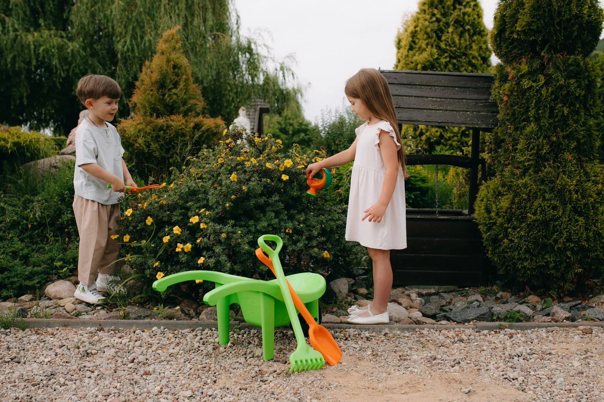
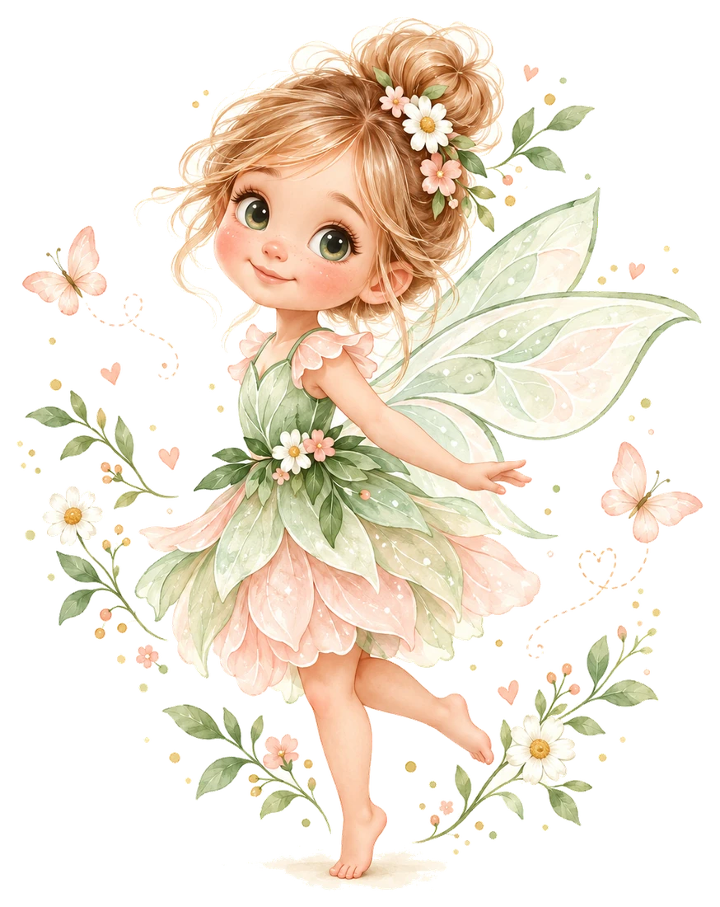
Rólunk
A Tündérkert egy családi légkörű bölcsőde, ahol a gyermekek nem "ellátottak", hanem a mindennapok apró főszereplői. Célunk, hogy a szülők nyugodt szívvel induljanak reggelente, tudva, hogy gyermekük szeretetteljes, figyelmes kezekben van.
Kis csoportlétszámmal, tapasztalt, gyermekszerető szakemberekkel és egy csipetnyi mesebeli hangulattal várjuk a hozzánk érkező családokat.
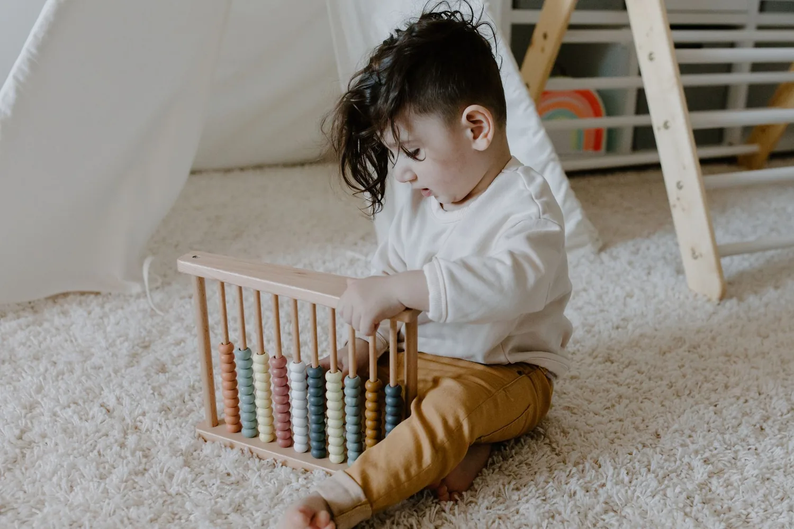
Szemlélet
Hiszünk abban, hogy minden gyermek saját ritmusában fedezi fel a világot. Olyan nyugodt, szeretetteljes környezetet teremtünk, ahol biztonságban lehetnek önmaguk, miközben játékosan fejlődnek és új élményeket szereznek.
Nem siettetjük a fejlődést — inkább teret és időt adunk neki, apró, gondosan előkészített lépésekben.
Beszoktatás
Tudjuk, hogy az első közös hetek a legmeghatóbbak — és néha a legnehezebbek is. Ezért a beszoktatást mindig fokozatosan, a gyermek és a család igényeihez igazítva építjük fel.
A szülővel közösen töltött első alkalmaktól kezdve, apró lépésekben haladunk, amíg a kisgyermek magabiztosan, örömmel érkezik hozzánk.
Egy nap a Tündérkertben
A napjaink kiszámíthatóak, mégis mindig tartogatnak új felfedeznivalót — a játéktól a közös étkezéseken át a pihenésig.
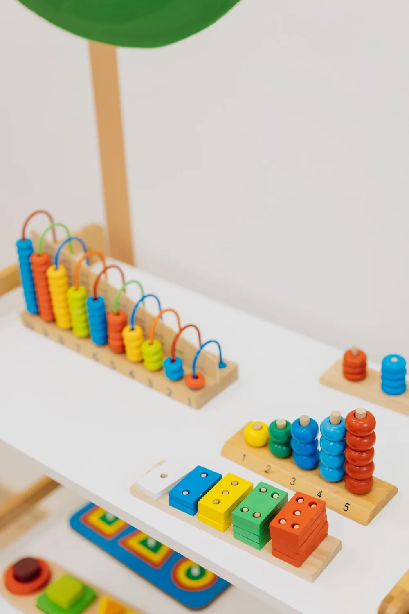
Játék és felfedezés
Szabad játék, mozgás és apró kalandok minden nap.
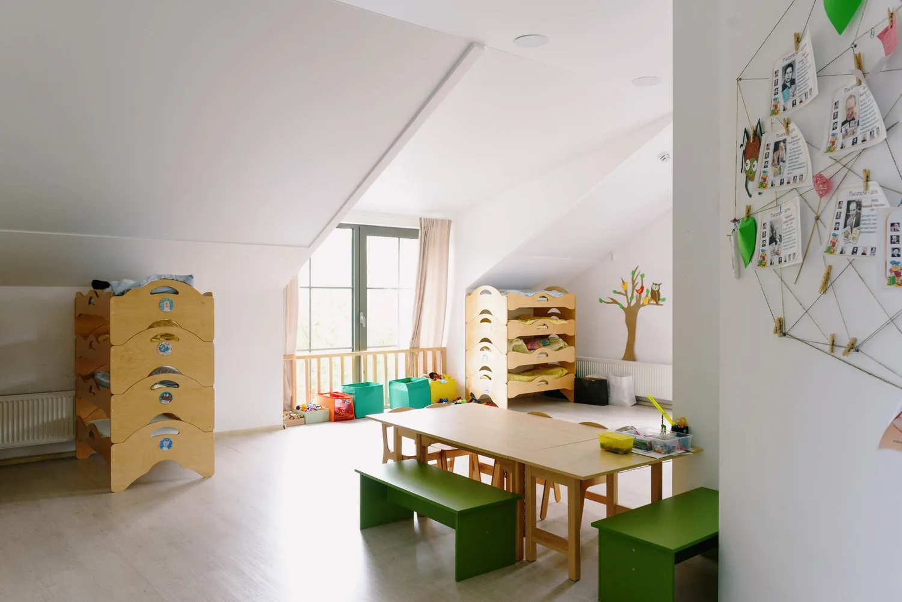
Közös étkezések
Nyugodt hangulatú, közös étkezési idő, saját tempóban.
Pihenés
Csendes, otthonos pihenőidő minden kis tündérnek.
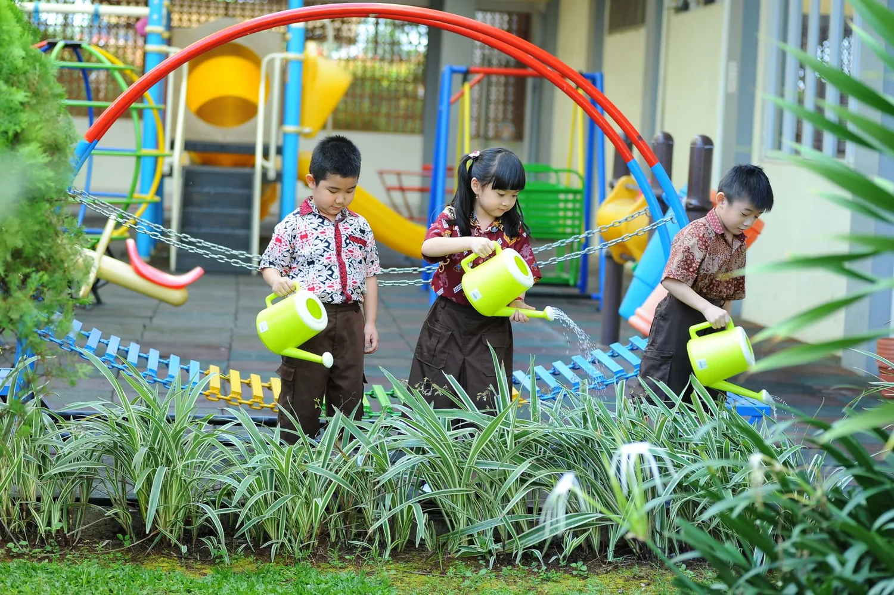
Mozgás
Szabad levegős, mozgásos élmények minden időben.
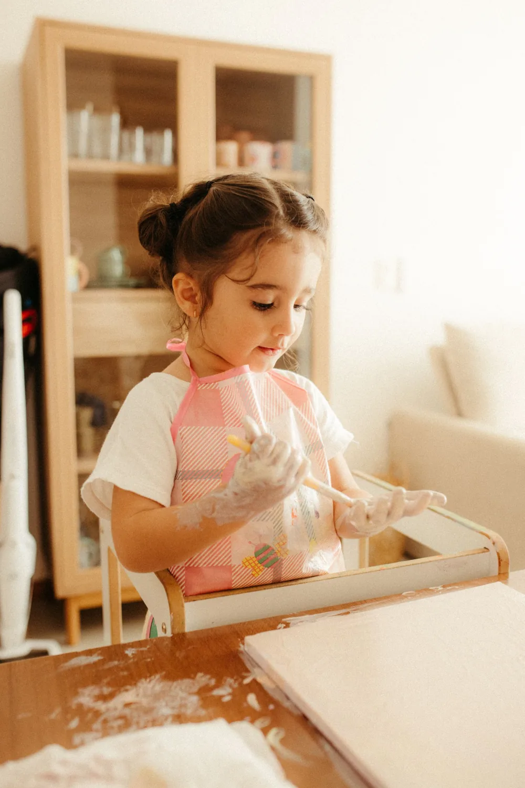
Kreatív foglalkozások
Festés, gyurmázás, alkotás — a fantázia szabadon szárnyalhat.
Ami igazán fontos nekünk
Kis létszámú csoport
Hogy minden gyermekre valóban jusson figyelem és idő.
Személyes figyelem
Odafigyelünk minden gyermek egyéni igényeire és tempójára.
Biztonságos környezet
Átgondolt terek, ahol a gyermekek nyugodtan felfedezhetnek.
Játékos fejlődés
Tanulás játékon, mesén és felfedezésen keresztül.
Szeretetteljes mindennapok
Meleg, elfogadó légkör minden egyes nap.
Galéria
Néhány kép a mindennapjainkból — kattints bármelyikre a nagyobb nézethez.
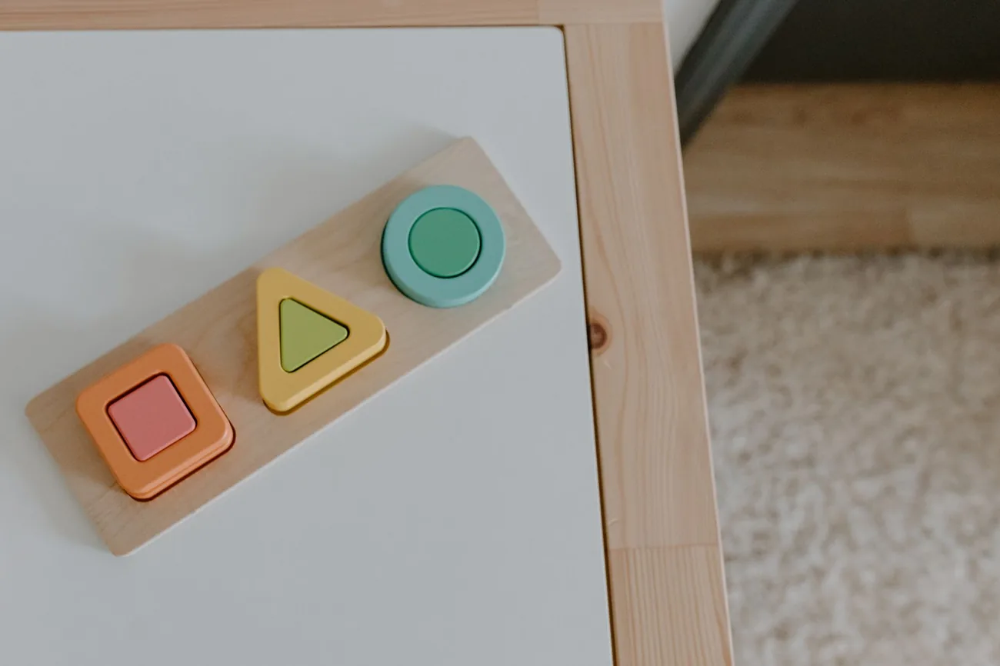
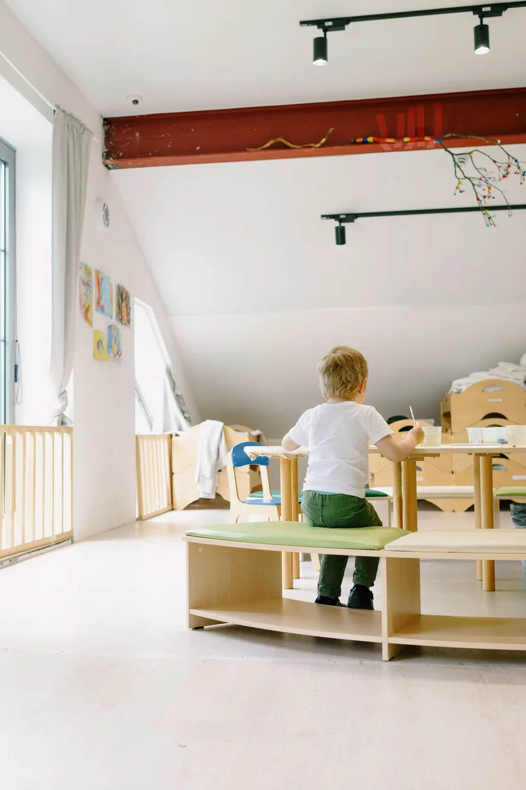
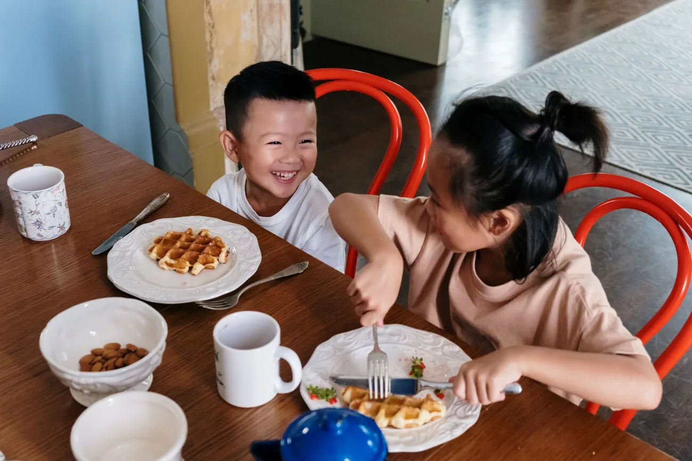
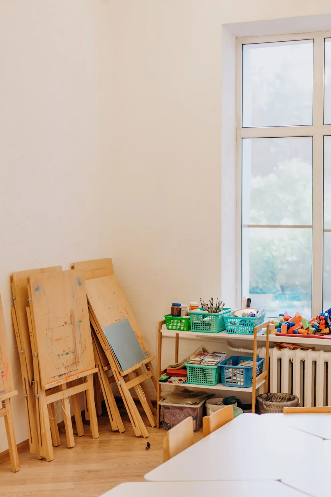
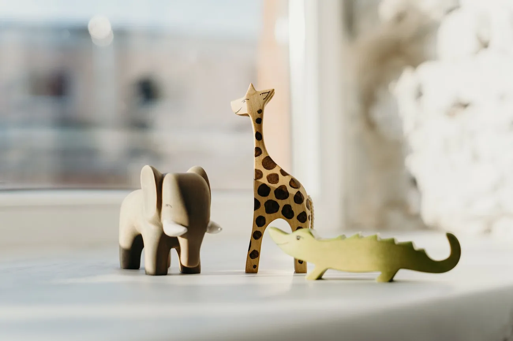
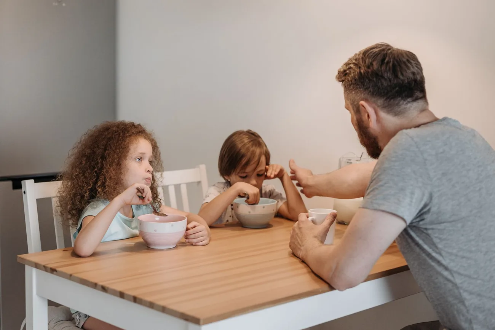
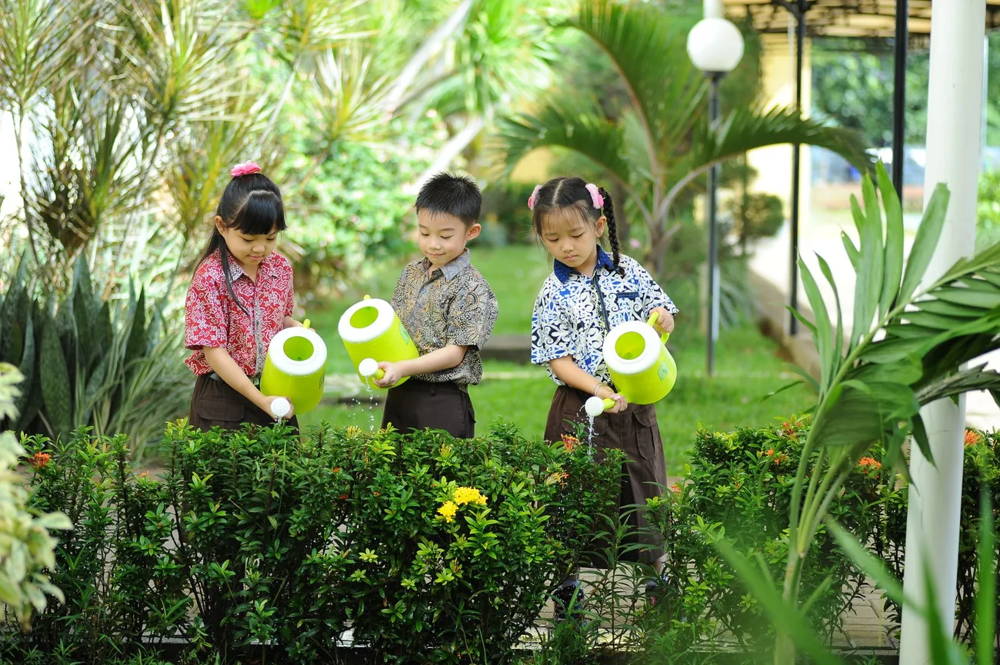
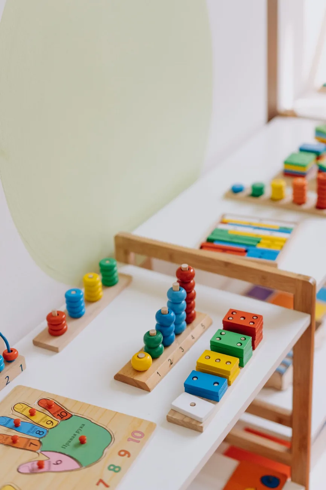
Hasznos információk
0–3 éves kor közötti gyermekeket fogadunk, kis létszámú csoportokban, egyéni fejlődési ütemükhöz igazodva.
Nyitvatartásunk: [NYITVATARTÁS]. Egyedi igény esetén keresd elérhetőségeinket.
Napi többszöri, változatos és gyermekeknek megfelelő étkezést biztosítunk, egyéni étrendi igényekre (pl. allergia) figyelemmel.
Fokozatos, a szülővel közösen kezdődő beszoktatási folyamatot alkalmazunk, a gyermek egyéni tempójára figyelve.
Váltóruhát, papucsot, kedvenc alvós játékot, valamint a gyermek egyéni szükségleteihez tartozó eszközöket kérjük hozni. Részletes listát a beszoktatás előtt adunk.
Napi szintű szóbeli visszajelzést adunk átadáskor, emellett elérhetőek vagyunk telefonon és e-mailben is a nap folyamán.
Szeretettel várjuk a kis tündéreket!
Ha szeretnétek megismerni a Tündérkertet, vagy kérdésetek van a bölcsődei felvétellel kapcsolatban, örömmel válaszolunk.
Kapcsolat
-
Telefon[TELEFONSZÁM]
-
E-mail[E-MAIL]
-
Cím[CÍM]
-
Nyitvatartás[NYITVATARTÁS]